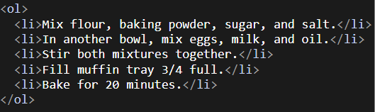
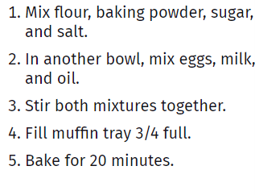
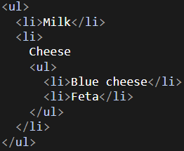
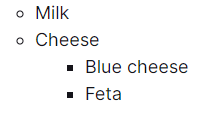
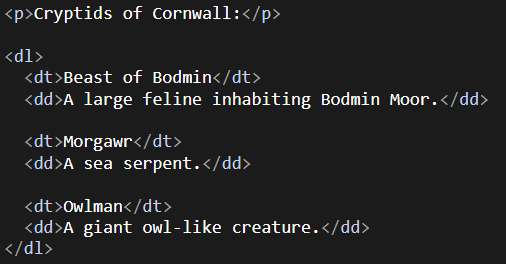
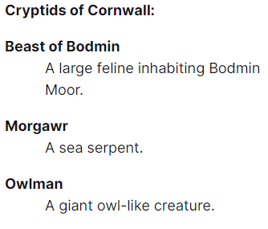
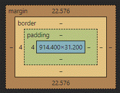

HTML
Basics
An HTML document must start with a <DOCTYPE html> declaration and normally begins and ends with an <html> The most commonly used tags are the <head> and <body> tag. The visible part of the page is in <body> and the data which the browser need is in <head>.
HTML Elements
An HTML element is everything from the start tag to the end tag (start and end tag included). <p>This is an element.</p>
A tag like <br> is called a void element because it has no closing tag.
Attributes
All HTML elements can have attributes, which provide additional information about elements. These attributes are specified in the start tag and usually look like this: attributeName="attributeValue".
Examples:
<a> can have the href attribute. (The <a> tag defines a hyperlink)
<img> tag is used to display an image in an HTML page. The src attribute specifies the path from which the image is displayed on the website. The width and height attribute modify the width and height of the image. And the alt attribute displays an alternative text if the image can't be shown.
The lang attribute from the <html> tag defines the language of the document. There are also the style and title attributes, which can alter the color, font, size, and more(style) and display a tooltip(title in a paragraph)
Headings
Headings are defined with the <h1> to <h6> tags. The headings from 1 to 6 get less and less important, while <h1> is the most important.
Headings are used to index the content and structure of your web pages by search engines.
Paragraphs
A new paragraph is defined by the <p> tag. Paragraphs always start on a new line with some white space (margin) before and after.
The browser will remove any extra spaces and lines in a paragraph, when the page is displayed.
There are also two void tags which are used in or between paragraphs. The <br> and the <hr> tags.
-
The <br> tag defines a line break (carriage return) even in a paragraph.
-
The <hr> tag defines a thematic break in an HTML page and is most often displayed as a horizontal rule. It's most common use is to separate content.
The <pre> element defines preformatted text. The text preserves both spaces and line breaks.
Comments
You can add comments by using <!-- This is a comment --> this syntax.
The ! is only used in the start tag.
Comments can be used to hide content and they can be set over multiple lines.
Links
The <a> tag defines a hyperlink. The most important attribute of <a> is href. It indicates the link's destination.
When you click on the links you are sent to the specified URL.
Another attribute of <a> is target.
Values that the target attribute can have: _self _blank _parent _top.
You can nearly make everything to a link via <a>.
For even more info look at w3schools.
Images
Images can improve the design and the appearance of a web page. The <image> tag is used to embed an image. An image isn't inserted, it is linked to the webpage. This tag is a void tag. It only contains attributes. When a web page loads, it is the browser, at that moment, that gets the image from a web server and inserts it into the page.
The two required attributes are src (specifies path to image) and alt (Specifies an alternate text for the image)
Images can also have the attribute height and width, which change the height and width of the image. (you should still do this in you stylesheet)
Head
The <head> element is a container for the elements <title>, <style>, <meta>, <link>, <scrpit> and <base>. All in all the <head> element is a container for metadata (data about data). It is between the <html> start tag and the <body> start tag.
The data from the <head> element is not displayed. It is only used by the browser for info.
Lists
| Kind of List | Tag and meaning | Example | Attributes/Styling |
|---|---|---|---|
| Ordered-List | Tag:<ol>...</lt>. In the <ol> tag you should make bullet points with <li>[content]</li>. <ol> stands for ordered list; <li> stands for list item | Example of an Ordered List | The start index (where the list starts counting) can also be changed with start="[startIndex]": <ol start="4">[content]</ol>. type can be used in the starting tag of <ol>. With it you can change the type of the bullet point:
|
| Unordered-List | Tag:<ol>...</lt>. In the <ol> tag you should make bullet points with <li>[content]</li>. <ol> stands for ordered list; <li> stands for list item | Example of an Unordered List | An unordered list can have the attributes type and compact, but these aren't supported in all browsers. Instead of type you can use list-style-type property in your CSS file. With this property you can change the bullet point to lots of different symbols or images. |
| Description-List | Tag:<ol>...</lt>. In the <ol> tag you should make description terms with <dt>[term]</dt>. Right after the <dt> tag you should make one or multiple <dd>[data]</dd> tags which stand for description data. | Example of a Description List | The description list doesn't normally contain bullet points and doesn't have specific attributes except the global attributes. |
Ordered List
 Unordered List
 Description List
 Margin and Padding
General
Margin and Padding can only be applied to block elements like <p>. Margin is outside the border, while padding is inside the border, but outside the content. (See picture)
Block- and Inline-Elements
There are block- and inline-elements which differ greatly. Also other elements like img exist which are kinda special inline elements. But we will get back to it later.
Block elements can be assigned a margin and padding in every direction, while an inline element can only get a right and left margin or padding. You can make an inline element a block element with the css property display:block